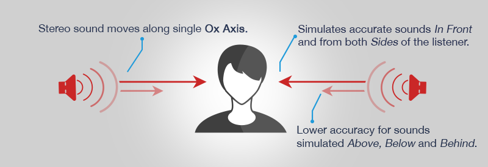
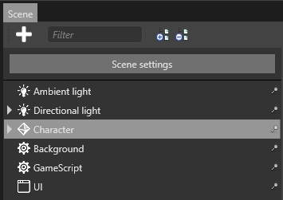
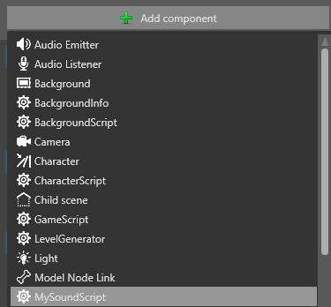
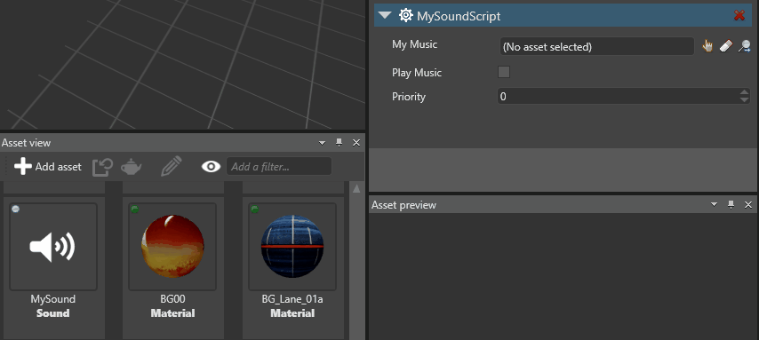
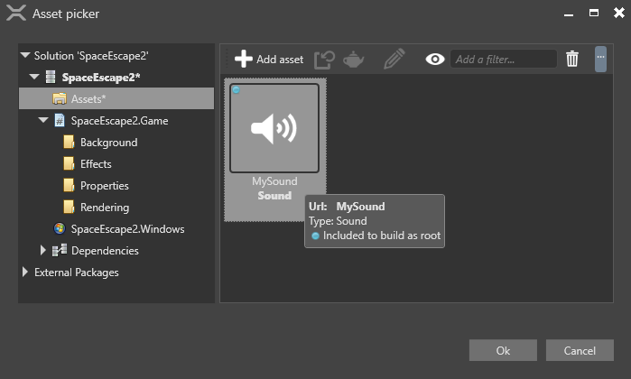

非空間オーディオ
初級 プログラマー
非空間オーディオは、エンティティ (プレイヤー カメラなど) の位置に関係なく、シーン全体で同じように聴こえます。非空間オーディオはステレオで、1 つの軸 (通常は X 軸) に沿って移動します。空間オーディオとは異なり、非空間オーディオの_ボリューム_、ピッチ (周波数)、その他のパラメーターは変化しません。背景音楽やメニューのサウンド エフェクトなどに便利です。

非空間オーディオでは、オーディオ エミッターまたはオーディオ リスナーは必要ありません。
1. オーディオをインポートしてビルドに含める
サウンド アセットがルート アセットであることを確認します。ルート アセットとは、実行時に使用できるようにビルドに組み込まれるアセットです。
［Asset view］で、アセットを右クリックして［Include in build as root asset］を選択します。

メニュー オプションの表示が［Do not include in build as root asset］になっている場合は、オプションは既に選択されているので、変更する必要はありません。
2. オーディオを再生するスクリプトを作成する
非空間オーディオを実行時に再生するには、コードでインスタンスを作成して動作を定義します。
SoundInstance は、以下のプロパティで実行時にオーディオを制御します。
| プロパティ | 機能 |
|---|---|
| IsLooping | オーディオのループを取得または設定します。 |
| Pan | 左右のスピーカーのバランスを設定します。既定では、各スピーカーの値は 0.5 です。 |
| Pitch | オーディオのピッチ (周波数) を取得または設定します。 |
| PlayState | SoundInstance の状態を取得します。 |
| Position | オーディオの現在の再生位置を取得します。 |
| Volume | オーディオのボリュームを設定します。 |
詳細については、SoundInstance API のドキュメントを参照してください。
Note
サウンドが既に再生中の場合に SoundInstance.Play をさらに呼び出してもすべて無視されます。 SoundInstance.Pause (サウンドが既に一時停止されているとき) および SoundInstance.Stop (サウンドが既に停止されているとき) についても同じです。
たとえば、次に示すコードは次の処理を行います。
- 非空間オーディオをインスタンス化します
- ループするようにオーディオを設定します
- ボリュームを設定します
- オーディオを再生します
public override async Task Execute()
{
// サウンドを読み込む
Sound musicSound = Content.Load<Sound>("MySound");
// サウンドのインスタンスを作成する
SoundInstance music = musicSound.CreateInstance();
// ループする
music.IsLooping = true;
// ボリュームを設定する
music.Volume = 0.25f;
// 音楽を再生する
music.Play();
}
代替手段: パブリック変数でスクリプトを作成する
使用するサウンド アセットごとにパブリック変数を作成します。上に列記したものと同じプロパティを使用できます。 次に例を示します。
public class MySoundScript : SyncScript
{
public Sound MyMusic;
private SoundInstance musicInstance;
public bool PlayMusic;
public override void Start()
{
musicInstance = MyMusic.CreateInstance();
}
public override void Update()
{
// 音楽が再生されていなくて、再生する必要がある場合は、音楽を再生する。
if (PlayMusic & musicInstance.PlayState != PlayState.Playing)
{
musicInstance.Play();
}
// 音楽が再生されていて、再生してはならない場合は、音楽を停止する。
else if (!PlayMusic)
{
musicInstance.Stop();
}
}
}
スクリプトをエンティティに追加する
［Scene view］で、スクリプトを追加するエンティティを選択します。

［Property grid］で、［Add component］をクリックして、スクリプトを選択します。

スクリプトがエンティティに追加されます。
パブリック変数をスクリプトに追加した場合、パブリック変数をサウンド アセットに関連付ける必要があります。
［Asset view］から各変数にアセットをドラッグ アンド ドロップします。

または、
 (［Select an asset］) をクリックします。
(［Select an asset］) をクリックします。
次に、使用するサウンド アセットを選択します。
